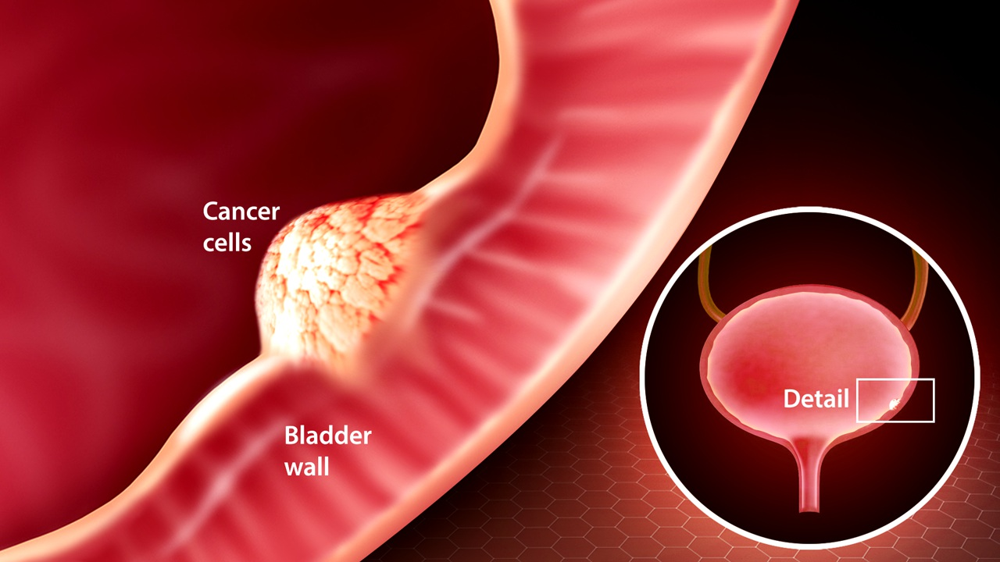

What is Bladder Cancer?
Bladder cancer is a common type of cancer that begins in the cells of the bladder. The bladder is a hollow muscular organ in your lower abdomen that stores urine. Bladder cancer most often begins in the cells (urothelial cells) that line the inside of your bladder. Urothelial cells are also found in your kidneys and the tubes (ureters) that connect the kidneys to the bladder. Urothelial cancer can happen in the kidneys and ureters, too, but it's much more common in the bladder.
Most bladder cancers are diagnosed at an early stage, when the cancer is highly treatable. But even early-stage bladder cancers can come back after successful treatment. For this reason, people with bladder cancer typically need follow-up tests for years after treatment to look for bladder cancer that recurs.
How Does Bladder Cancer Develop?
Bladder cancer begins when cells in the bladder develop changes (mutations) in their DNA. A cell's DNA contains instructions that tell the cell what to do. The changes tell the cell to multiply rapidly and to go on living when healthy cells would die. The abnormal cells form a tumor that can invade and destroy normal body tissue. In time, the abnormal cells can break away and spread (metastasize) through the body.
Three Main Kinds of Bladder Cancers
Urothelial Carcinoma.
Urothelial Carcinoma, previously called transitional cell carcinoma, occurs in the cells that line the inside of the bladder. Urothelial cells expand when your bladder is full and contract when your bladder is empty. These same cells line the inside of the ureters and the urethra, and cancers can form in those places as well. Urothelial carcinoma is the most common type of bladder cancer in the United States.
Squamous Cell Carcinoma
Squamous cell carcinoma is associated with chronic irritation of the bladder — for instance, from an infection or from long-term use of a urinary catheter. Squamous cell bladder cancer is rare in the United States. It's more common in parts of the world where a certain parasitic infection (schistosomiasis) is a common cause of bladder infections.
Adenocarcinoma
Adenocarcinoma begins in cells that make up mucus-secreting glands in the bladder. Adenocarcinoma of the bladder is very rare.